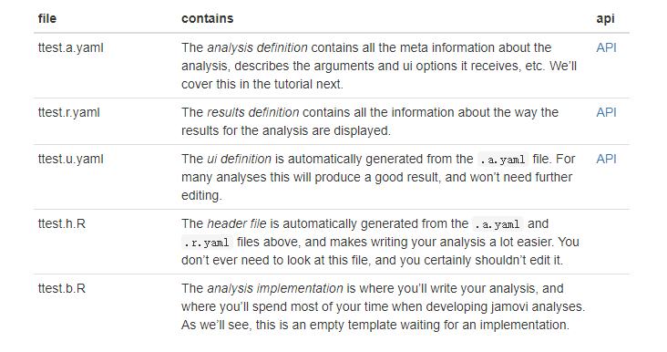
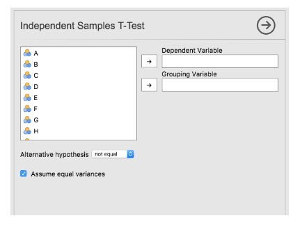
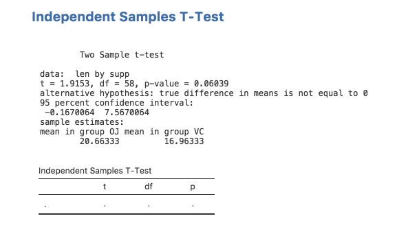
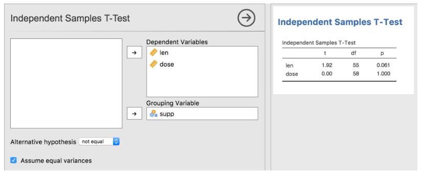
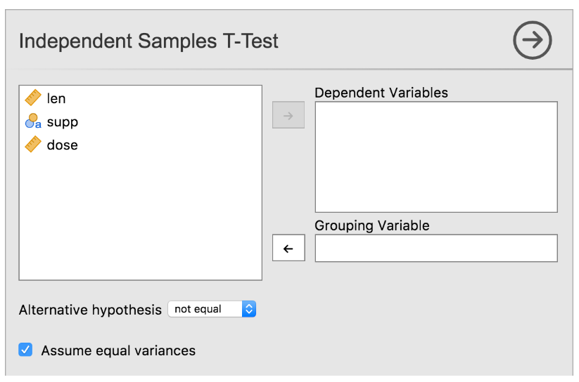
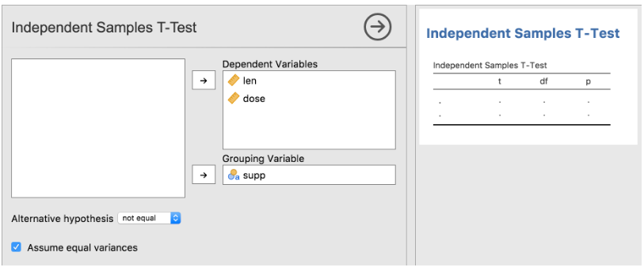

本篇文章主要介绍如何为jamovi开发统计模块。jamovi统计分析咨询请加qq: 2726725926
- 起飞
- 创建模块
- 创建分析
- 实现分析(R代码)
- 添加图
- level mean sel seu
- 1 OJ 20.66333 19.45733 21.86934
- 2 VC 16.96333 15.45417 18.47250
- 发布模块
- 补充
- 动态表
- 状态
起飞
在开始之前，jamovi 中的分析模块是用R 编程语言编写的。本教程假设您有一些 R 知识，最好有一些编写 R 包的经验。
为jamovi 开发模块需要这个jmvtools包。在本教程中，我们将：
- 安装 jmvtools
- 确保jmvtools可以找到jamovi
- 从 GitHub 构建和安装 jamovi 模块
安装 jmvtools
jmvtools 可以从 jamovi 仓库获得，并且可以通过以下方式安装在 R 中：
1 |
|
检查jmvtools可以找到jamovi
现在你已经jmvtools安装好了，我们可以检查它是否可以找到你的jamovi安装：
1 | jmvtools::check() |
jmvtools 在可能被视为“常见地点”的地方搜索 jamovi，例如：
- /Applications
- /usr/lib/jamovi
- C:\Program Files
如果jmvtools找不到，您可以在调用中指定路径check()：
1 | jmvtools::check(home='C:\\Users\\jonathon\\Documents\\jamovi') |
注意代码中的路径需要根据你自己的电脑来设置
当然, 如果你想自己手动设置jamovi的路径, 也是可以的, 只需要执行下面的命令:
1 | options(jamovi_home='jamovi的安装路径') |
安装模块
现在我们已经安装好了jmvtools，我们可以用它来构建和安装一个jamovi模块。接下来，我们将从 GitHub 下载一个模块，构建并安装它。我们将使用Base R模块 - 您可以使用此处的直接链接下载它:https://github.com/jamovi/jmvbaseR/archive/master.zip , 这是一个实验性的模块。
下载到的文件是一个压缩包, 先解压到文件夹, RStudio 中打开该文件夹（或将您的工作目录设置为该目录）。现在我们可以调用install()函数：
1 | jmvtools::install() # not to be mistaken for devtools::install() |
这将构建模块，并将其安装到 jamovi 中。
如果您现在转到打开的 jamovi 窗口，您会看到功能区上出现了一个新的“Base R”菜单，其中包含一组新的分析。从 R 安装和更新 jamovi 分析的能力非常棒，因为我们将在下一节中看到，我们可以对分析进行更改，jmvtools::install()再次运行，并立即看到这些更改反映在 jamovi 中。这使得开发和测试 jamovi 模块变得轻而易举！
创建模块
在本节中，我们将从头开始创建一个 jamovi 模块，并将其安装到 jamovi 中。
为 jamovi 创建模块的最简单方法是使用包中的create()函数jmvtools：
1 | jmvtools::create('SuperAwesome') |
这将创建一个SuperAwesome目录。如果我们现在查看刚出炉的 SuperAwesome 的内容，我们会发现：
1 | SuperAwesome/ |
对于以前从事过 R 包开发工作的人来说，这应该看起来很熟悉。那是因为 jamovi 模块是R 包，但带有附加jamovi/0000.yaml文件。有了这个文件，
这个包就变成了双重公民：它可以构建到 R 包中，也可以构建到 jamovi 模块中。
如果您查看该0000.yaml文件，您会注意到它包含的内容与DESCRIPTION文件非常相似。但是，当我们向模块添加分析时，
它们也会列在此文件中。在开发的早期阶段，这个文件先不管他，我们稍后会回到它。
创建分析
一个独立样本t检验通常用于确定两个分组是否在一些变量均值上有显著差异。例如，您可能对一个街区的儿童与另一街区的儿童的身高是否不同感兴趣。在这种情况下，数据集将为每个孩子分配一行, 总共有两列数据, 一列代表身高, 一列代表街区。
对于那些熟悉t.testR 内置函数的人，如果两个变量分别是height和neighbourhood，则可以运行t检验：
1 | t.test(height ~ neighbourhood, data=data) |
在下一节中，我们将创建一个使用此函数的 t 检验 jamovi 分析。
jamovi 模块的最简单方法是使用jmvtools的函数addAnalysis()。首先我们将工作目录设置为SuperAwesome目录，然后调用addAnalysis()
1 | setwd('SuperAwesome') # 设置工作目录 |
然后如果我们现在查看SuperAwesome模块的目录树，我们有：
1 | SuperAwesome/ |
说到这里我有点不好意思说, 每次分析有5个文件。这种结构确实使事情更易于管理，因此尽管乍一看似乎有些过分，但背后有很好的理由。请耐心等待，它并不像看起来那么复杂。

yaml 是一种用于结构化数据的简单易读的文本格式。如果您不熟悉 yaml，可以在此处阅读有关格式的更多信息，但这可能不是必需的。它直观且易读，您可能会毫不费力地拿起它。
- ttest.a.yaml: 该文件包含了所有分析的元信息，说明它接收到的参数和用户界面选项等。我们将在接下来的教程涵盖这一点。
- ttest.r.yaml: 该文件包含有关分析结果的显示方式。
- ttest.u.yaml: 根据
ttest.a.yaml的内容自动生成的。对于许多分析，这将产生良好的结果，并且不需要进一步编辑。 - ttest.h.R: 这是一个头文件, 也是从
ttest.a.yaml和ttest.r.yaml自动生成的, 你不需要看这个文件, 也不需要修改它 - ttest.b.R: 实现分析的代码文件, 也是你花费最多时间的文件, 决定了你的分析是如何进行的
ttest.a.yaml的定义
jmvtools::addAnalysis()创建一个.a.yaml带有一些基本选项的默认文件。令人高兴的是，对于本教程，这些恰好对应于 t 检验所需的选项。我们生成的ttest.a.yaml文件如下：
1 |
|
文件顶部是有关分析的信息：
1 |
|
接下来是选项: data，dep，group，alt和varEq。 当用作 R 包时，这些选项对应于传递给R 函数的参数。在这种情况下，也就是:
1 | ttestIS(data, dep, group, alt='not equal', varEq=FALSE) |
（如果你往里面看ttest.h.R，你会发现这个确切的函数已经生成了。）
在jamovi 中使用时，这些选项对应于分析的UI 选项。现在让我们来看看。安装我们刚刚创建的模块并打开jamovi（或者先打开jamovi，然后安装模块——顺序无关紧要）：
1 | jmvtools::install() |
（请注意，如果您的模块有其他依赖项，这些也将在此阶段安装。您可以在本教程末尾的附加说明中阅读有关附加依赖项的更多信息。）
该SuperAwesome菜单现在可以使用了，并且包含Independent Samples T-Test。

打开这个分析的界面, 就会看到它的配置选项:

从ttestis.a.yaml文件中就可以找到这些配置选项的信息:
1 | - name: dep |
我们可以看出来, dep和group的类型都是Variable, 意味着他们指的是数据集中的一列变量。
接下来看alt选项, 它是指的是一些额外假设, options中列出了所有可选项:
1 | - name: alt |
最后来看varEq: 它是一个布尔值, 只有”true”和”false”两个值, 它在界面上就是一个可选框:
1 | ... |
还有许多不同的选项类型。API 中提供了对它们中的每一个的更全面的描述，以及它们的属性: https://dev.jamovi.org/api_analysis-definition.html
当然，我们的分析实际上还没有做任何事情——我们还没有编写任何 R 代码。
实现分析(R代码)
在本节中，我们将添加实现，即 R 代码，以执行我们的 t 检验分析。
在jamovi 分析中，这些R代码的实现存在于.b.R文件中，所以如果我们查看我们的ttest.b.R文件，我们会看到：
1 | # This file is a generated template, your changes will not be overwritten |
- self
$options$dep - self
$options$group - self
$options$alt - self
$options$
你看到的$负号实际上就是一个属性获取负号,self$options$dep翻译过来就是self的options中的dep, 分析用到的数据保存在self$data中, 这样我们就可以编写我们的t检验了:
1 | ttestClass <- R6::R6Class("ttestClass", |
这段代码做的事情很简单, self$options$dep和self$options$group这两者都是字符串并且它们组装成一个公式。然后我们可以调用t.test()传入这个公式的函数，以及self$`data数据框。最后，我们打印结果。
在jamovi 中运行时，打印语句(print)的结果将出现在终端，而不是应用程序的结果区域（用户希望的地方）。为了解决这个问题，我们不是简单地打印结果，而是将结果分配给分析的结果对象。在 R 会话中运行时，仍会打印结果，但在 jamovi 中运行时，结果将显示在结果面板中。我们使用self`$results来保存结果。我们的新函数现在将变为：
1 | ttestClass <- R6::R6Class("ttestClass", |
jmvtools::install()
1 |
|
devtools::install()
library(SuperAwesome)
data(ToothGrowth)
ttest(data=ToothGrowth, dep=’len’, group=’supp’)1
2
输出结果:
Independent Samples T-Test
Two Sample t-test
data: len by supp
t = 1.9153, df = 58, p-value = 0.06039
alternative hypothesis: true difference in means is not equal to 0
95 percent confidence interval:
-0.1670064 7.5670064
sample estimates:
mean in group OJ mean in group VC
20.66333 16.963331
2
3
4
在我们继续之前，精明的读者会意识到组装我们的公式paste是有问题的。如果任一列名称有空格或特殊字符，粘贴将产生错误的公式。例如，如果用户指定了一个被称为的因变量the fish——结果公式将为the fish~group，而对 的调用as.formula()将失败：
```as.formula('the fish~group')
1 | ## Error in parse(text = x, keep.source = FALSE) : |
jmvcore提供了函数constructFormula()，它可以组合简单的公式来适当地转义列名：
1 | constructFormula('the fish', c('group')) |
我们的代码做出相应的改变:
1 | ttestISClass <- R6Class("ttestISClass", |
ttestISClass <- R6Class(“ttestISClass”,
inherit=ttestISBase,
private=list(
.run=function() {
t.test(c(Inf, 3)) # <-- produces an error!
})
)1
2
3
4
5
6
7
8
9
10
11
12
13
14
15
16
17
18
19
20
21
22
23
24
25
26
27
28
29
30
31
32
33
会看到这样的错误提示:
<img src="imgs/04.png">
在这个例子中，我们的代码只有一行代码，所以我们可以合理地确定问题出在哪里。然而，实际上软件可以是两行或三行甚至更多行代码。在更复杂的情况下，有一个“堆栈跟踪”会很方便，它告诉我们问题发生在哪里。jamovi 可以置于“开发模式”，它会在发生错误时显示堆栈跟踪。开发模式可以从应用程序菜单切换到 jamovi 窗口的右上角：
<img src="imgs/05.png">
然后错误信息就会更详细:
<img src="imgs/06.png">
## 创建丰富结果
在本节中，我们将为我们的分析添加丰富的结果；一个不错的 APA 格式表，如下所示：
<img src="imgs/07.png">
### 结果的定义
为了提供丰富的结果，我们需要在结果定义中添加一些条目。这是`ttest.r.yaml`文件的目的：
```yaml
---
name: ttest
title: Independent Samples T-Test
jrs: '1.1'
items:
- name: text
title: Independent Samples T-Test
type: Preformatted
这与ttest.a.yaml文件非常相似；有一个名称、一个标题和一个 jamovi 结果规范 ( jrs) （注意，这jas与.a.yaml文件中的不同）。items描述了构成结果的所有项目。例如，结果可以由两个表和一个图组成。结果中的每一项都列在此处。
目前，结果包含一个Preformatted的文本名为”Independent Samples T-Test”。如果你回想上一节，我们访问了一个结果对象，如下所示：
1 |
|
name: ttest
title: Independent Samples T-Test
jrs: ‘1.1’
items:
- name: text
title: Independent Samples T-Test
type: Preformatted
- name: ttest
title: Independent Samples T-Test
type: Table
rows: 1
columns:
- name: var
title: ''
type: text
- name: t
type: number
- name: df
type: integer
- name: p
type: number
format: zto,pvalue
1 |
|
如果您现在返回到 jamovi，您会看到已安装的模块已更新，并且我们之前的分析已重新运行。我们添加的表现在在结果中可见。这非常方便：每当您重新安装模块时，它都会立即更新。您的结果现在应如下所示：

填充表
现在我们已经创建了一个表，让我们用 t 检验中的值填充它。为此，我们需要从 Rt.test函数返回的 t-test 对象中提取实际值。相当尴尬的是，R 中的分析不会返回一致的结果对象；通常没有可预测的方式来了解如何访问基础值。有些 R 函数返回列表，有些返回 S3 对象，有些返回 S4。有些需要使用索引 读取值，有些需要使用插槽 (@)。通常需要一些反复试验才能弄清楚如何访问结果对象的基础值。一个有用的函数是mode()函数。例如，我们可以像这样对结果对象调用 mode ：
1 | results <- t.test(1:5) |
输出:## [1] "list"
这告诉我们 t.test 函数的结果对象是一个列表（尽管有些难懂）。然后我们可以使用我们通常在列表上使用的函数，例如：
1 | results <- t.test(1:5) |
输出:1
2## [1] "statistic" "parameter" "p.value" "conf.int" "estimate"
## [6] "null.value" "alternative" "method" "data.name"
稍加修改，我们可以找出results$statistic包含t统计量、results$parameter自由度和results`$p.valuep 值的值（最后一个可能不需要那么多修改）。
我们可以使用以下setRow()函数将这些值中的每一个分配给表中的行：
1 | table <- self$`results`$ttest |
ttestISClass <- R6Class(“ttestISClass”,
inherit=ttestISBase,
private=list(
.run=function() {
formula <- constructFormula(self`$options$`dep, self`$options$`group)
formula <- as.formula(formula)
results <- t.test(formula, self`$data)
table <- self$`results`$ttest
table$`setRow(rowNo=1, values=list(
var=self`$options$`dep,
t=results`$statistic,
df=results$`
我们也来看看在 R 会话中运行这个分析。我们可以使用以下命令将软件包安装到 R 中：
devtools::install() # note here we're using devtools, not jmvtools
并使用以下命令运行分析：
1 | library(SuperAwesome) |
输出:
1 | Independent Samples T-Test |
可以看出，在 R 中也生成了一个格式良好的表。一切都保持不变，精确到小数位数。通过这种方式，jamovi 可以使 R 包——即使你不打算发布为 jamovi 模块——更有吸引力、更容易阅读、也更一致。
添加图
在本节中，我们将为我们在本系列中开发的 t 检验分析添加一个图。绘图是出现在结果中的另一项，因此我们将在ttest.r.yaml文件中添加另一个条目：
1 |
|
和以前一样，我们定义了一个项目有name，title和type; 在这种情况下，
类型是Image. 此外，我们定义renderFun了负责渲染图像的函数的名称。
无论我们指定什么渲染函数，我们都必须将其作为私有成员函数添加到ttestClassin:
1 | #' @export |
Imports: jmvcore, R6, ggplot21
2
3然后在代码中使用ggplots2需要引入:
```import(ggplot2)
这些都是基本的R语言特性。
代码实现
在jamovi 模块中，绘图分两个阶段进行；首先准备绘图的数据，然后渲染绘图。
这两个阶段意味着如果图像被调整大小，或者用户请求不同的文件格式，只需要再次进行渲染——数据准备只需要发生一次。
对于 t 检验，我们将绘制每个组的平均值和标准误。在 中ggplot2，我们需要将这些“绘图点”组合成一个数据框，我们将按如下方式进行：
1 | means <- aggregate(formula, self`$data, mean)[,2] |
level mean sel seu
1 OJ 20.66333 19.45733 21.86934
2 VC 16.96333 15.45417 18.47250
1 |
|
image <- self`$results$`plot
image`$setState(plotData)
1 |
|
#’ @export
ttestClass <- R6::R6Class(
“ttestClass”,
inherit = ttestBase,
private = list(
.run = function() {
formula <- paste(self$options$dep, ‘~’, self$options$group)
formula <- as.formula(formula)
results <- t.test(formula, self$`data)
table <- self`$results$`ttest
table`$setRow(rowNo=1, values=list(
var=self$`options`$dep,
t=results$`statistic,
df=results`$parameter,
p=results$`p.value
))
means <- aggregate(formula, self`$data, mean)[,2]
ses <- aggregate(formula, self$`data, function(x) sd(x)/sqrt(length(x)))[,2]
sel <- means - ses # standard error lower bound
seu <- means + ses # standard error upper bound
levels <- base::levels(self`$data[[self$`options`$group]])
plotData <- data.frame(level=levels, mean=means, sel=sel, seu=seu)
image <- self$`results`$plot
image$`setState(plotData)
},
.plot=function(image, ...) {
plotData <- image`$state
plot <- ggplot(plotData, aes(x=level, y=mean)) +
geom_errorbar(aes(ymin=sel, ymax=seu, width=.1)) +
geom_point(aes(x=level, y=mean)) +
labs(title=self$`
发布模块
调用以在当前工作目录中jmvtools::install()生成具有扩展名的文件.jmo。这个文件是你的模块，可以分发给其他人，以“加载”。这是在测试期间分发模块的好方法，您可能希望将其发送给少数人。人们可以从 jamovi 商店（可从 jamovi 右上角的菜单访问）内加载模块。
一旦您对您的模块准备好进行更广泛的分发感到满意，我们鼓励您将其提交到 jamovi 商店。这使得任何使用 jamovi 的人都可以浏览和发现您的模块。
如果您有想要提交给 jamovi 商店的模块，请与我们联系：contact@jamovi.org
补充
依赖关系
jmvtools::install()还会下载您的所有软件包依赖项（在DESCRIPTION文件中列出），并将它们捆绑到您的模块中。这确保了模块拥有它需要的一切，并且模块将始终使用可预测的依赖版本。这会导致更大的模块文件大小，但可以说是考虑到磁盘空间的便宜，为可重复性付出的代价很小。
命名空间
我们建议您尽量减少NAMESPACE文件中的导入语句。这些可能会导致加载包时出现大量延迟，因为无论是否需要，都会加载文件中列出的所有包。
相反，访问具有完整命名空间的函数，即：
1 | stats::t.test(...) |
使用这种方法，依赖项仅在需要时加载。这会缩短启动时间（用户选择您的分析之一与结果首次出现之间的延迟），并且可以显着减少您的模块使用的 RAM 量。
动态表
这是我们之前设置的结果:
1 | ... |
结果包含一个名为ttest“独立样本 T 检验”的表格，有 4 列和 1 行。
然而，实际上，表中的行数通常不是固定的。它们可能会根据用户选择的选项或分析本身的结果而有所不同。在本教程中，我们将专注于前者。
在之前的教程系列中，我们创建了 t 检验分析。它允许用户指定单个因变量和单个分组变量。但是，我们可以通过允许人们指定多个因变量来使这种分析更加方便。例如，数据集可能包含“性别”、“身高”和“体重”列。通过允许多个因变量，用户可以指定“身高”和“体重”作为因变量，并指定“性别”作为分组变量。然后我们的分析可以执行多个 t 检验（每个因变量一个）。结果分析可能如下所示：

我们需要做的第一件事就是改变因变量的.a.yaml文件，从Variable到Variables。
1 | --- |
注意当前 jmvtools 中存在一个错误，其中 UI 未适当更新。在这种情况下，jmvtools应该更新 .u.yaml 文件以接受多个变量，但这不会发生。可以手动更新 .u.yaml 文件，但通常最简单的方法是简单地删除 .u.yaml 文件，然后让 jmvtools 从头开始创建一个。这是将在未来几周内解决的问题。
请注意，您必须关闭 jamovi，然后重新启动它才能查看分析 UI 的更改。
由于我们更改了dep变量的名称和类型，我们的 t 检验将不再起作用。目前应该注释掉或删除.run()t检验分析函数的内容，否则会产生一些错误。我们将在本教程的稍后部分返回。
执行这些修改后，您的 t-test UI 应如下所示：

我们需要修改.y.raml, rows是需要更改的值, 现在表格不是1行了, 但是具体是几行完全取决于用户设置的因变量(deps)数量:
1 | ... |
我们就直接更改为:
1 | ... |
以这种方式绑定时，表中的行数始终与用户指定的变量数相匹配。让我们重新安装我们的模块，看看它的实际效果：

可以看出，我们的表相应地增长和缩小。但我们可以做得更好。
第一列应该包含变量名，虽然我们可以使用 Table 的setRow()函数添加它，但有更好的方法来做到这一点。
我们可以使用content这个选项:
1 | items: |
你会发现($key)`这个特殊的字段, 它实际上是每一行的key, 这个key需要你在代码中设置, 所以你看到下面的R代码的时候才知道是什么
现在就是在b.R文件中设置我们的表格, 我们在调用setRow的时候, 使用了rowKey这个参数, 这样我们的表格每一行都有个key。
1 | .run=function() { |
.run = function() {
# read the option values into shorter variable names
dep <- self$`options`$dep
facs <- self$`options`$factors
covs <- self$`options`$covs
# get the data
data <- self$`
状态
到目前为止，教程系列中演示的分析完全无状态。这意味着每次运行分析时（例如，响应用户选中复选框）它都会从头到尾运行分析。在许多情况下，这不是很有效。用户可以运行 t 检验，然后选择请求描述的复选框。如果没有state，分析将在每次更改分析时重新计算 t 检验结果，即使更改的选项对 t 检验结果没有影响。
对于许多分析来说，这不是问题——事实上，t 检验运行得非常快，因此每次更改选项时重新计算并不会真正造成问题；用户仍然几乎立即收到结果。但是，某些分析可能需要相当长的时间才能运行，并且在每次更改时完整地重新运行这些分析会导致长时间的延迟和糟糕的用户体验。这个问题的解决方案是state。
在使用状态下，分析会保留先前运行时的信息。如果用户对现有分析进行更改，则该分析可以使用先前计算的结果。以 t 检验为例，如果用户选中请求附加描述表的复选框，则分析可以重新使用上次运行分析时的 t 检验结果。但是，如果用户更改了影响 t 检验结果的选项（例如 t 检验的类型），则分析不应重复使用较早的 t 检验结果。是否应使用较早的结果由clearWith属性决定。
clearWith
在r.yaml中使用:
1 | items: |
这clearWith设置了以后, 如果任何选项(group，alt或varEq)被清除或改变, 表格将重新计算, 请注意，我们尚未将deps选项添加到此列表中。当用户添加额外的因变量时，我们不希望它清除现有的行。您可以通过运行此示例并一次添加多个因变量来查看会发生什么。
但是，应该注意的是，我们实际上并没有减少正在执行的计算量。尽管在更改某些选项时不再清除该表，但我们在.b.R文件中的分析实现仍会遍历所有因变量并对每个因变量执行 t 检验。然后用这个新计算的值覆盖表中已有的值；完全相同的值。这不是问题，因为 t-test 运行得非常快，但是我们可以修改我们的.b.R文件以不计算表中已经存在的值。isFilled()方法帮我们找出哪行数据需要进行计算
isFilled()
有三种调用方法:
1 | table`$isFilled() # 整个表格是否填满 |
现在我们来改写我们的R代码:
1 | .run=function() { |
table$setState(object)
object <- table$
注意
统计咨询请加QQ 2726725926, 微信 mllncn, SPSS统计咨询是收费的, 不论什么模型都可以, 只限制于1个研究内.
跟我学统计可以代做分析, 每单几百元不等.
本文由jupyter notebook转换而来, 您可以在这里下载notebook
可以在微博上@mlln-cn向我免费题问
请记住我的网址: mlln.cn 或者 jupyter.cn